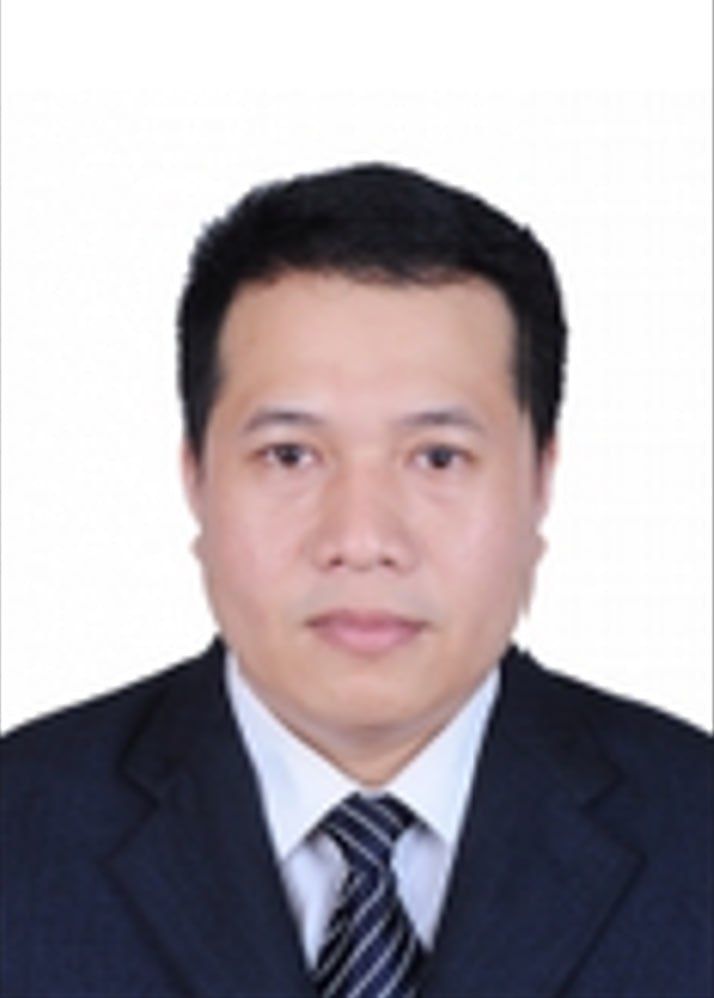

Mr.Chhunnan used to work as Dean College of Science and Technology over 18 years universities, He got involved in Electronics and Telecommunications, Computer Science and Information Technology.
Background Educations 1994: Studied at Royal Phnom Penh University Department Mathematics. 2002: Engineer of Electronics and Telecommunications, Department of Electronics and Telecommunications Hanoi University of Technology. 2004: Master of Sciences Electronics and Telecommunications, Department of Electronics and Telecommunications Hanoi University of Technology
Senior Web Developer specializing in back end development.Experienced with all stages of the development cycle for dynamic web.
projects. Well-versed in numerous programming languages including HTML5, PHP OOP, JavaScript, CSS, MySQL, Ajax and Json. - Own POS System – Present
- Software Team Leader – Jan,2022 - dcX Co,. Ltd
- Project Freelancer – Sept 2022
- Project Manager – Jan,2010 - 2022
2009 Prime Minister Samdech HunSen - Handa National Award Scholarships 2008:University of Cambodia, Phnom Penh, Cambodia,Bachelor of Information Technology(IT);2009 Asian HRDI Award Scholarship:Asian Human Resource Development Institute (Cambodia),Associate Degree of Website Development and Multi Media.2015 Her Royal Highness Princess Maha Chakri Sirindhorn's Award Scholarship 2015:Surindra Rajabhat University,Thailand, Master of Information and Communication Technology in Education. Ms.Sousdey had worked for many years as Website Master and Designer, Digital marketing for Business Development, branding design and multimedia with bank and organization. She is also a Lecture for the University of Cambodia (UC) College of Sciences and Technology.

2011 Norton University, Cambodia Bachelor of Science Computer 2015 Norton University, Cambodia Master of Science in Information Technology Mr.Seila had worked for many years as Microsoft Technology Manager, service technical for government, Bank, MFI, and organization. He is also a Lecture for the University of Cambodia (UC) College of Sciences and Technology.